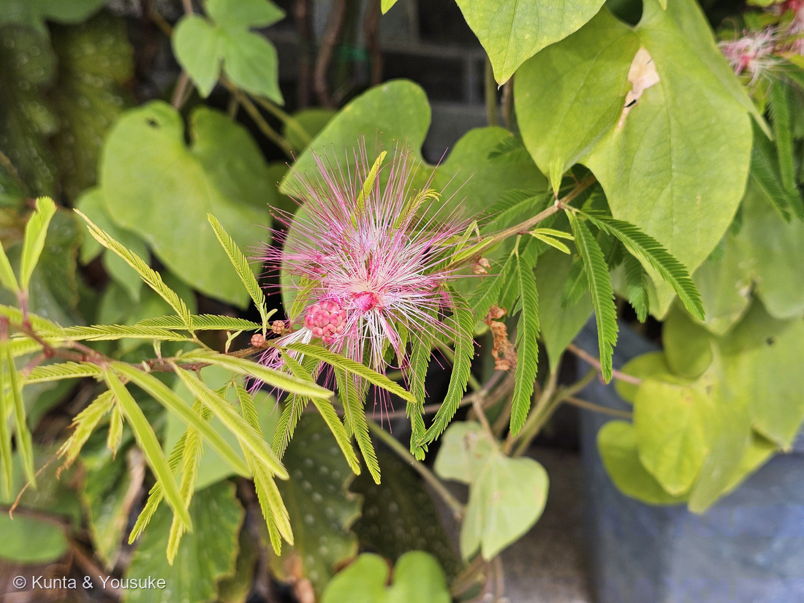
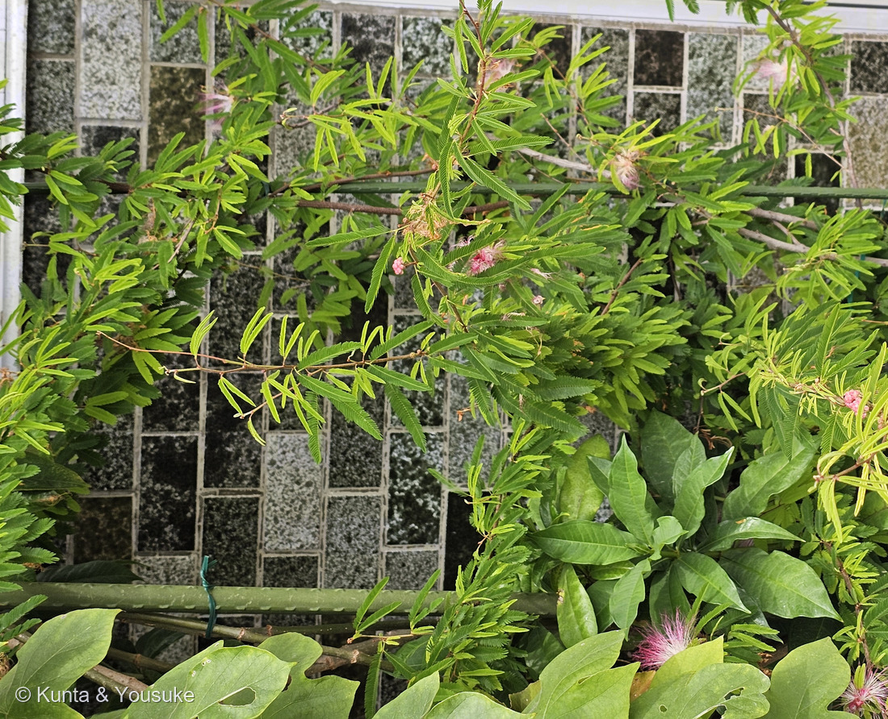
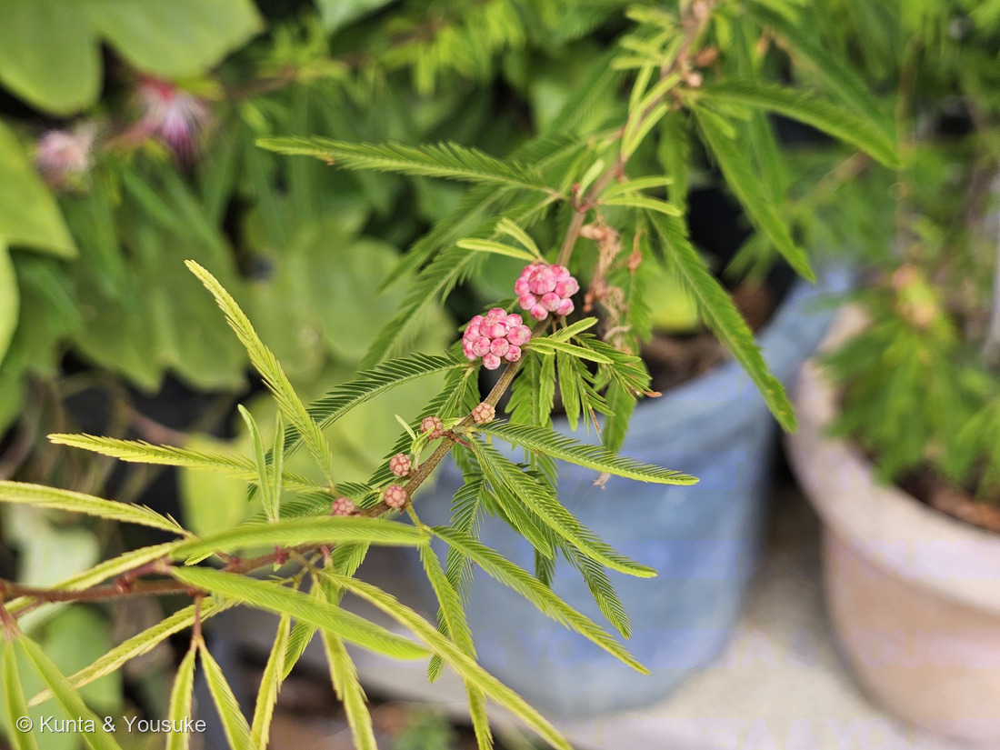
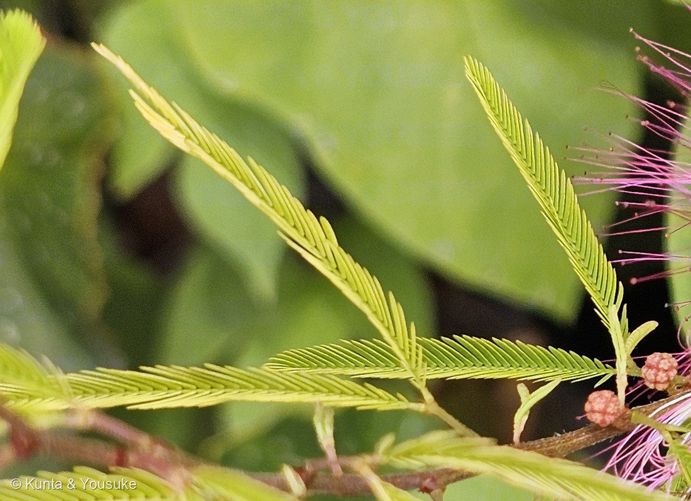
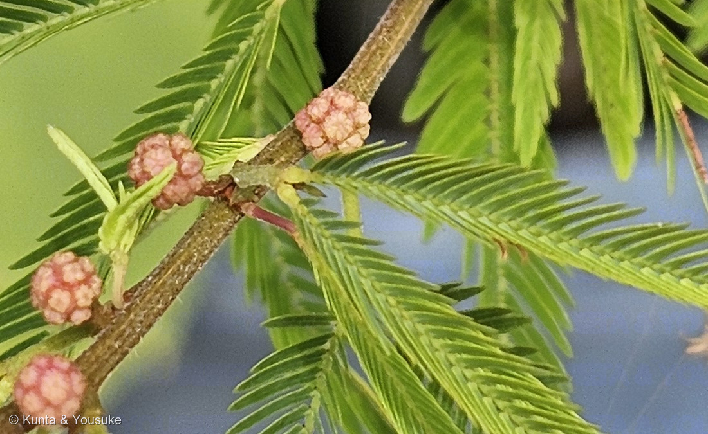

地図を読み込んでいるよ…
🔍 写真も地図も、押しているあいだ拡大して見られるよ（スマホは指を置いてすこし待ってね）。
🌍 の地図＝この子がもともと自生している場所を緑に。ブラジル南東部、パラグアイ、ウルグアイ、アルゼンチン北部。日本では栽培されている外来種で、庭木や鉢物として植えられている。
⭐⭐ふるさとは南アメリカの南のほうだよ＝ブラジル南東部・パラグアイ・ウルグアイ・アルゼンチン北部。⚠⚠この緑は、ほんとうよりずっと広く見えている＝ブラジルは南東部だけ、アルゼンチンも北部だけなのに、地図は国までしか塗れないから。⭐⭐⭐まちがえた相手のネムノキは、まったく逆側のアジアから日本にかけての子だよ＝地球の反対側で、似たふわふわの花ができたことになる。⚠日本は塗っていない＝庭木や鉢物として植えられているだけの外来種だから。
⚠ 地図は国（日本と中国だけ県・省）までしか塗れないから、ほんとうの分布より広く見えていることがあるよ。地図はだいたいの場所。正確なところは、上の文を見てね。
トキワネム（常磐合歓）
Calliandra brevipes Benth.
別名 ピンクパウダーパフ · カリアンドラ・セロイ · カリアンドラ・ブレビペス
マメ科 · Fabaceae（ベニゴウカン属 Calliandra · マメ目 Fabales）── ⭐ネムノキ亜科は009 オジギソウにつづいて2人目／⭐マメ科は、この子を入れて図鑑に7人（007 シロツメクサ・009 オジギソウ・049 アルファルファ・126 キングサリ・127 シロバナフジ・145 クズ）
燻太さんの言葉「オジギソウそっくりだけど、ずっと大きい花を咲かせていて、ピンクの打ち上げ花火みたい。枝には緑の羽がびっしり。でも、この子はオジギソウほどシャイじゃない。触っても閉じないから。」── ⚠⚠そして燻太さんが「羽片は一対、【Y】字みたいな付き方」と見つけて、ぼくのまちがいが直ったよ
⚠⚠⚠ まず、正直に ── ぼくはこの子を「ネムノキ」と読みちがえた
⭐⭐燻太さんは、写真といっしょにこう教えてくれた。「遠くから、ピンク色の花を咲かせる低木が見えてきたから近寄ってみると、その正体はまだ若いネムノキだったよ。」──ぼくも、そう思った。
- ⚠そしてぼくは、葉の写真に「①〜⑥」と番号をふって、「羽片が6対ある＝ネムノキだ」という絵まで作って送った。⭐でも、それはまちがいだった。
- ⭐⭐⭐⭐⭐気づいたのは燻太さん。──「枝から出ている羽片は一対だとおもう。写真で見る場所を間違えると、一対以上の羽片が出ているように見えるけど、ちゃんとみると【Y】字みたいな付き方なんだ。」
- ⭐言われて葉柄の付け根を7倍にしたら、そのとおりだった。──枝から短い赤褐色の葉柄が出て、その先のふくらんだ関節で、2本の軸が左右にひらくだけ。⭐ぼくが「葉軸」と呼んで赤い線を引いたものは、Y字の片方の羽片の軸だったんだ。
- ⚠⚠⚠そして、もっと悪いことがある。──ぼくは花糸を物差しにして、小葉の長さを2〜4mmと測っていた。そして「ネムノキの記載より小さすぎる」と気づいてもいた。⚠なのに「測り方が甘いから決め手にしない」と、自分の数字を自分で捨てた。
- ⭐⭐⭐その数字は、トキワネムの「長さ3.5〜5.5mm」にぴったり合っていた。──測定は、正しかったんだ。
- ⭐087 ヤマモモのときは「自分の違和感を流した」。今回は「測った数字を信じなかった」。⭐同じ失敗の、別の顔だと思う。
- ⭐⭐燻太さんは、こうも書いてくれた。「ネムノキみたいと自分が感じたのは、花の第一印象に引きずられていた。」──⭐106 マメアサガオで決めた「色は目にいちばん先に飛びこむのに、決め手としてはいちばん弱い」の、花の形版だね。
- ⭐まちがいは消さずに残しておくね（073で決めたこと）。
⭐⭐⭐⭐⭐ 決め手は、たった一か所 ── 葉柄の先が【Y】字
⭐⭐写真⑤を見てほしいな。──褐色の枝（白い皮目が点々と見える）から、短い赤褐色の葉柄が出る。その先に黄緑色のふくらんだ関節があって、そこから2本の軸が左右にひらく。⭐それでおしまい。
- ⭐⭐⭐つまり羽片は1対だけ。──⚠ネムノキは、葉軸から羽片が6〜12対も出て、大きな一枚の羽をつくる。⭐ここが決定的にちがう。
- ⭐この「Y字」に、小葉が20〜45個ずつびっしり並ぶ。⭐だから遠目には、細かい羽が2枚ならんでいるように見えるんだ。
- ⭐⭐羽片の数で、図鑑の3人がきれいに並ぶよ。
- 009 オジギソウ＝羽片2対（掌状に4本ひらく）
- この子（トキワネム）＝羽片1対（Y字）
- ネムノキ＝羽片6〜12対（大きな羽）
- ⭐同じネムノキ亜科なのに、「羽の枚数」がこんなにちがう。
- ⭐落とせた相手は、ほかにもいるよ。
- オオベニゴウカン＝羽片は1対だけれど、小葉が7〜9対で長さ2〜4cmと大きく、雄しべは緋色。
- ベニゴウカン（ヒネム）＝小葉が6〜10対と少ない。
- 009 オジギソウ＝羽片2対で、触ると閉じる。
⭐⭐ この植物のこと
- マメ科ベニゴウカン属の常緑低木。高さ1.5〜2m。⭐「常磐（ときわ）」は常緑のこと。⚠ネムノキは落葉樹だから、そこも名前でちがっている。
- ふるさとはブラジル南東部、パラグアイ、ウルグアイ、アルゼンチン北部。⭐日本では栽培種で、庭木や鉢物として植えられている。
- 小葉は長さ3.5〜5.5(〜6.5)mm×幅0.4〜1.4(〜1.6)mmの線形〜線状長楕円形。⭐羽片の軸は15〜35mmと短い。
- 頭花には花が7〜12個。花冠は長さ4〜6.6mmと小さく、ピンク赤色。
- ⭐⭐⭐雄しべは18〜25本、長さ25〜32mm。──「房飾りは下部が帯白色、先がピンク色〜深紅色」。⭐写真①の、あの白からピンクへのグラデーションそのものだよ。
- 花期は7〜9月。⭐撮影は9月5日だから、終わりのころだね。⚠ネムノキの花期は6〜7月。ここもちがう。
- さやは長さ4.5〜6cm×幅0.7〜0.8cm。⚠ネムノキは長さ10〜20cm。
- ⭐英語版Wikipediaは、この子の花について「emanates mild and pleasant smell（おだやかで気持ちのよい香りを放つ）」と書いている。⏳燻太さん、こんど嗅いでみてね。
⭐⭐⭐ 打ち上げ花火と、つぼみの育ちかた
⭐⭐燻太さんの言葉。「オジギソウそっくりだけど、ずっと大きい花を咲かせていて、ピンクの打ち上げ花火みたい。つぼみが成長していく過程も見せてくれた。」
- ⭐打ち上げ花火に見えるのは、花びらではなく雄しべだから。──花冠は長さ4〜6.6mmしかなくて、雄しべは25〜32mm。⭐5倍以上ちがう。⭐だから花は「ふわふわ」になるんだ。
- ⭐⭐写真③を見て。──1本の枝の上に、かたい球のつぼみ・ふくらんだつぼみ・ほどけかけ・ひらいた花が、順にならんでいる。⭐下から上へ育っていくようすが、1枚に収まっているよ。
- ⭐写真①の左下のつぼみの塊も面白い。──ピンクの小さな球がぎゅっと集まっていて、その一つひとつが1個の花のつぼみ。⭐7〜12個で、ひとつの頭花になるんだ。
⭐⭐⭐ オジギソウとの、いちばん大事なちがい
⭐⭐燻太さんは、ここも見てきてくれた。「枝には緑の羽がびっしり。でも、この子はオジギソウほどシャイじゃない。触っても閉じないから。」
- ⭐009 オジギソウは、触られると閉じる。──あれは刺激に答えている動き。
- ⭐⭐この子は触っても閉じない。──⚠でも「閉じない子」というわけではないと思う。⭐ネムノキ亜科の仲間はたいてい、夜になると葉を閉じる（就眠運動）。
- ⭐⭐⭐ネムノキの場合、それがどうやって起きるかが調べられていて、面白いんだ。──日本語版Wikipediaによると「光を当て続ける実験を行ったところ、体内時計による概日リズムに従って就眠することが判明している」。
- ⭐つまり外が暗いから閉じるのではなく、体の中の時計で閉じる。
- ⭐⭐触られて閉じるオジギソウは外からの合図、ネムノキは内なる時計。⭐同じ「閉じる」でも、きっかけがまるでちがう。
- ⏳⚠この子（トキワネム）が夜に閉じるかどうかは、ぼくが読めた出典に書いていなかった。⭐同じ亜科だから閉じると思うけれど、それはぼくの見当だよ。⏳夜にのぞいてみるのが、いちばん早い。
⚠⚠ 学名が割れている
出典：学名（Calliandra brevipes Benth.／シノニム C. selloi）・和名トキワネム（常磐合歓）と別名ピンクパウダーパフ・原産（ブラジル南東部、パラグアイ、ウルグアイ、アルゼンチン北部）・日本では栽培種・高さ1.5〜2mの常緑低木・小葉は(20〜)23〜45個・小葉は長さ3.5〜5.5(〜6.5)mm×幅0.4〜1.4(〜1.6)mmの線形〜線状長楕円形・羽片の軸は(12〜)15〜35(〜38)mm・托葉は三角状披針形〜デルタ形で長さ0.6〜2mm・頭花に花が7〜12個・花冠はピンク赤色で長さ4〜6.6mm・雄しべは18〜25数性で長さ(22〜)25〜32mm・房飾りは下部が帯白色で先がピンク色〜深紅色・花期7〜9月・豆果は長さ4.5〜6cm×幅0.7〜0.8cmは三河の植物観察「トキワネム」。オオベニゴウカンの羽片1対・小葉7〜9対で長さ2〜4cm・雄しべは緋色・頭花は直径3〜5cmは三河の植物観察「オオベニゴウカン」。ネムノキの2回偶数羽状複葉・小葉は不対称な包丁形・花弁は長さ7〜8mmで基部が合着・花糸が長さ3〜4cmで先が淡紅色・花期6〜7月・樹高6〜10m・豆果は長さ10〜15cmは三河の植物観察「ネムノキ」。ネムノキが羽片6〜12対で各羽片に小葉20〜30対をつけること・雄しべは白または桃色で根もとが白いこと・夏じゅう咲くこと・落葉高木で成長が速いこと・さやは長さ10〜20cmは英語版Wikipedia "Albizia julibrissin"。ネムノキの和名の由来（夜に葉が閉じる就眠運動）と「光を当て続ける実験を行ったところ、体内時計による概日リズムに従って就眠することが判明している」は日本語版Wikipedia「ネムノキ」。トキワネムの花が「emanates mild and pleasant smell」であること・原産地は英語版Wikipedia "Calliandra brevipes"。ベニゴウカン属は POWO で150種・日本で栽培される種と和名（オオベニゴウカン／ヒメベニゴウカン／スリナムゴウカン／カリアンドラ・トウィーディー／ベニゴウカン）・C. brevipes の和名がトキワネムであることは日本語版Wikipedia「ベニゴウカン属」。学名の有効性は GBIF の species/match API（C. selloi＝ACCEPTED／C. brevipes＝SYNONYM／C. surinamensis・C. tweediei・C. eriophylla＝ACCEPTED／C. emarginata＝SYNONYM／どれも Fabaceae）。⭐小葉を写真の中の比で測ったこと（2〜4mm）と、羽片の数で009・この子・ネムノキが並ぶという整理は、ぼくの観察とぼくの読みだよ。⭐そして「羽片は一対、【Y】字みたいな付き方」を見つけたのは燻太さんで、それがこの回の決め手になった。